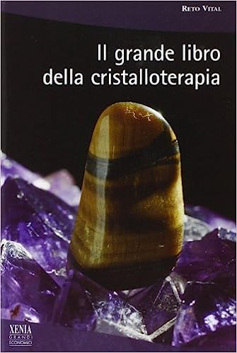
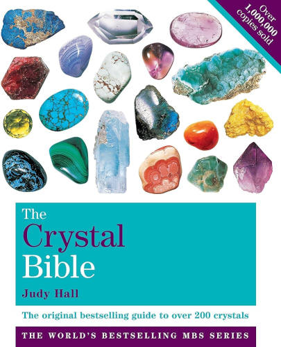
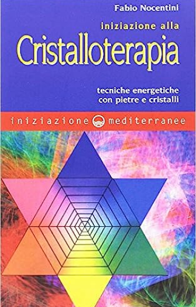
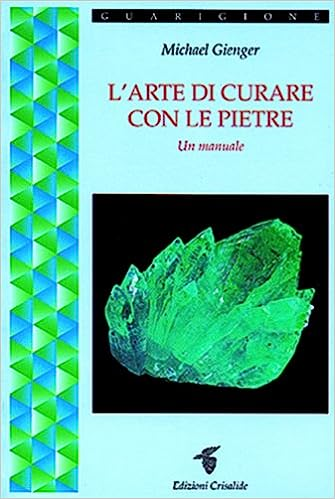

Se sei interessato/a alla cristalloterapia, di seguito troverai libri pertinenti all’argomento,
in modo tale da poter scavare nelle viscere di questa antica pratica andando incontro
ad interessanti notizie e curiosità.

IL GRANDE LIBRO DELLA CRISTALLOTERAPIA (R. VITAL).

LA BIBBIA DEI CRISTALLI
LA BIBBIA DEI CRISTALLI
(JUDY HALL)

INIZIAZIONE ALLA CRISTALLOTERAPIA (F.NOCENTINI)

L’ARTE DI CURARE CON LE PIETRE (M.GIENGER)
RICORDA
La cristalloterapia è una pratica olistica.
Sebbene molti abbiano sperimentato benefici significativi, è importante consultare
un professionista della salute per le tue esigenze mediche specifiche.
La cristalloterapia non sostituisce la consulenza medica professionale.